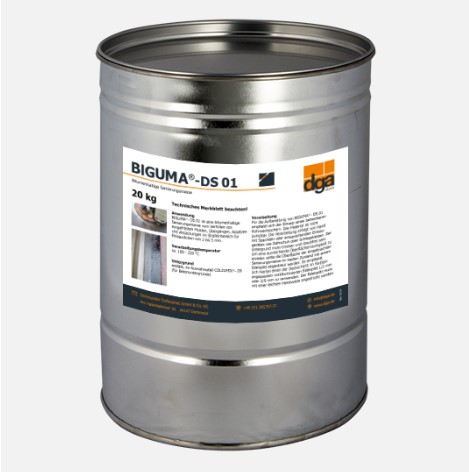

BIGUMA®- DS 01
Битумсодержащие мастики для санации для глубины нанесения от 2 до 5 мм
Вы желаете получить свободное предложение или техническую информацию? Обращайтесь к нам!


Вы желаете получить свободное предложение или техническую информацию? Обращайтесь к нам!
Преимущества:
– легко заливается и/или намазывается
– почти бесшовное рассредоченние
– отличная адгезия к битумсодержащим и минеральным основам
– хорошая устойчивость к стиранию для глубины нанесения до 5 мм
– совместимость с обычными битумсодержащими строительными материалами
Упаковка:
– Жестяная бочка: 20 кг